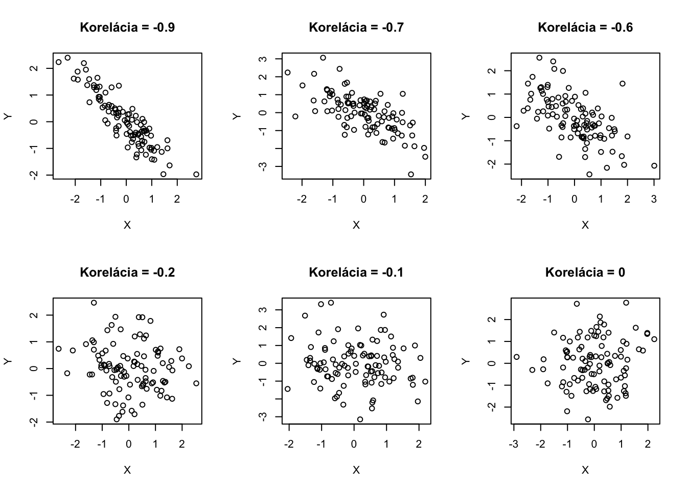
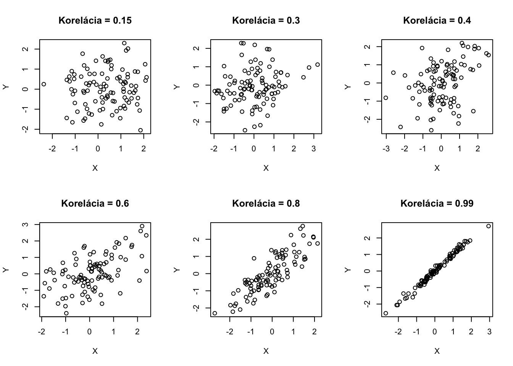
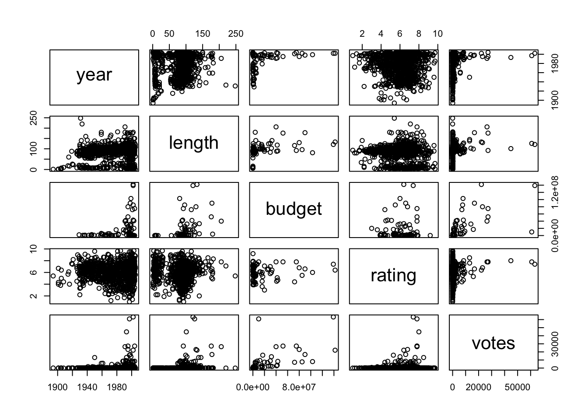
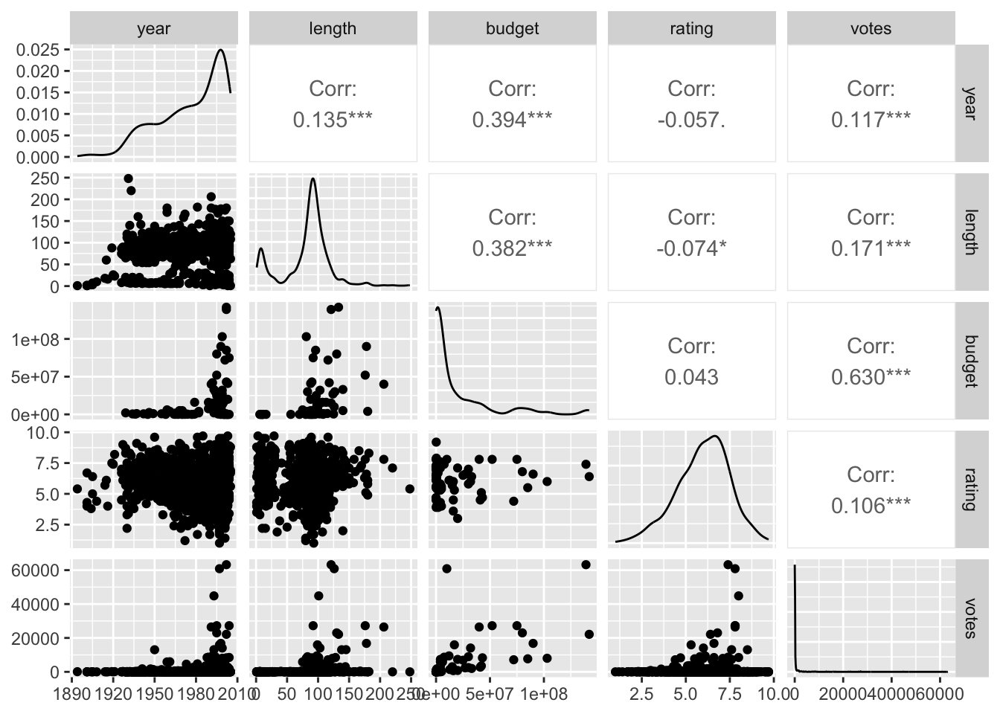
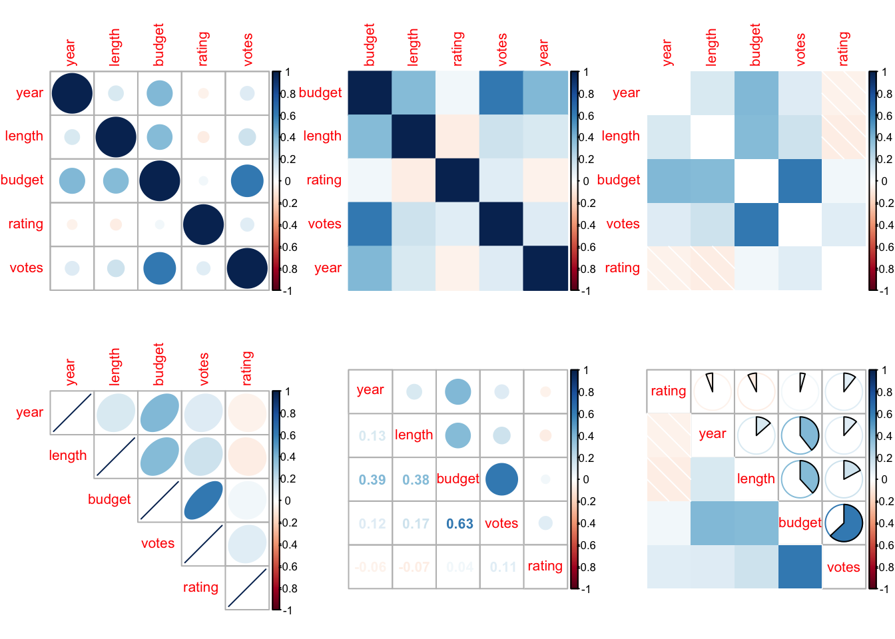
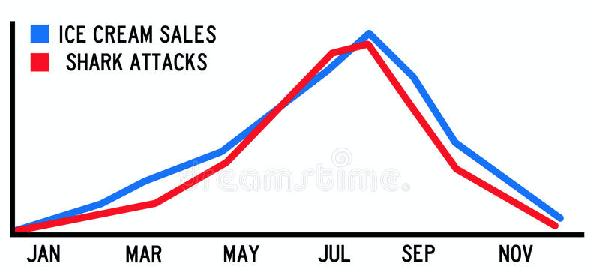

5 Náhodné vektory a súvis medzi náhodnými premennými
Odteraz budeme načas hovoriť o náhodnom vektore. Je to vektor náhodných premenných definovaných na rovnakom pravdepodobnostnom priestore. V tejto kapitole sme hovorili o dvojrozmernom náhodnom vektore, teraz to rozšírime a budeme hovoriť o \(n\)-rozmernom náhodnom vektore \((X_1,X_2,\dots,X_n)^T.\)
Tento pojem kľúčový na pochopenie štatistického testovania hypotéz, o ktorom budeme hovoriť neskôr. Ide o triviálne rozšírenie dvojrozmerného náhodného vektora, ktorý sme opisovali skorej.
Združená kumulatívna distribučná funkcia \(F_{XY}: \mathbb{R}^n \rightarrow [0,1]\) náhodného vektora \((X_1,X_2,\dots,X_n)^T\) je definovaná nasledovne:
\[\begin{eqnarray*} F_{X_1,X_2,\dots,X_n}(t_1,t_2,\dots,t_n) &=& P(X_1 \leq t_1 \cap X_2 \leq t_2 \cap \dots \cap X_n \leq t_n)\\ &=& P(X_1 \leq t_1, X_2 \leq t_2, \dots , X_n \leq t_n). \end{eqnarray*}\]
Diskrétne náhodné premenné
Ak sú časti náhodného vektora diskrétne rozdelené náhodné premenné, pravdepodobobnostné správanie popisujeme tiež združenou pravdepodobnostnou funkciou
\[\begin{eqnarray*} p_{X_1,X_2,\dots,X_n}(x_1,x_2,\dots,x_n) &=& P(X_1 = x_1 \cap X_2 = x_2 \cap \dots \cap X_n = x_n)\\ &=& P(X_1 = x_1, X_2 = x_2, \dots ,X_n = x_n). \end{eqnarray*}\]
Aby táto bola korektná, tak musí platiť
- \(\forall x_1 \in \mathcal{S}_{X_1}, \dots, \forall x_n \in \mathcal{S}_{X_n}: p_{X_1,X_2,\dots,X_n}(x_1,x_2,\dots,x_n) \geq 0,\)
- \(\sum_{x_1 \in \mathcal{S}_{X_1}}\dots \sum_{x_n \in \mathcal{S}_{X_n}} p_{X_1,X_2,\dots,X_n}(x_1,x_2,\dots,x_n)=1,\)
- \(\forall i = 1,\dots,n: \forall x_i \in \mathcal{S}_{X_i}: \sum_{\forall j \neq i: x_j \in \mathcal{S}_{X_j}} p_{X_1,X_2,\dots,X_n}(x_1,x_2,\dots,x_n)= p_{X_i}(x_i).\)
Spojité náhodné premenné
Ak sú časti náhodného vektora spojite rozdelené, popisujeme pravdepodobnostné správanie pomocou združenej funkcie hustoty \(f_{X_1,X_2,\dots,X_n}(x_1,x_2,\dots,x_n): \mathbb{R}^n \rightarrow \mathbb{R}^{+},\) ktorá spĺňa nasledovnú vlastnosť
\[\begin{eqnarray*} P\left(X_1 \in [a_1,b_1] \cap \dots \cap X_n \in [a_n,b_n] \right) &=& P\left(X_1 \in [a_1,b_a], \dots X_n \in [a_n,b_n] \right) \\ &=& \int_{a_1}^{b_1}\dots \int_{a_n}^{b_n}f_{X_1,X_2,\dots,X_n}(x_1,x_2,\dots,x_n) dx_1 \dots dx_n. \end{eqnarray*}\]
Funkcia hustoty musí spĺňať nasledovné vlastnosti
- \(\forall x_1 \in \mathbb{R}, \dots, \forall x_n \in \mathbb{R}: f_{X_1,X_2,\dots,X_n}(x_1,x_2,\dots,x_n) \geq 0,\)
- \(\int_{-\infty}^{\infty} \dots \int_{-\infty}^{\infty} f_{X_1,X_2,\dots,X_n}(x_1,x_2,\dots,x_n) dx_1 \dots dx_n =1,\)
- \(\forall i = 1,\dots,n: \forall x_i \in \mathbb{R}:\) \(\int_{-\infty}^{\infty}\dots \int_{-\infty}^{\infty} f_{X_1,X_2,\dots,X_n}(x_1,x_2,\dots,x_n) dx_1 \dots dx_{i-1} dx_{i+1} dx_n= f_{X_i}(x_i).\)
Vzťah medzi \(f_{X_1,X_2,\dots,X_n}\) a \(f_{X_1,X_2,\dots,X_n}\) je takýto:
\[F_{X_1,X_2,\dots,X_n}(t_1, \dots, t_n) = \int_{-\infty}^{t_1} \dots \int_{-\infty}^{t_n} f_{X_1,X_2,\dots,X_n}(x_1,x_2,\dots,x_n) dx_1 \dots dx_n\] a
\[ f_{X_1,X_2,\dots,X_n}(x_1,x_2,\dots,x_n) = \frac{\partial^n}{\partial x_1 \dots \partial x_n }F_{X_1,X_2,\dots,X_n}(x_1,x_2,\dots,x_n).\]
Hovoríme, že náhodné premenné \(X_1,X_2,\dots,X_n\) sú združene nezávislé, ak platí:
\[\forall x_1 \in \mathcal{S}_{X_1}, \dots, \forall x_n \in \mathcal{S}_{X_n}: p_{X_1,X_2,\dots,X_n}(x_1,x_2,\dots,x_n) = p_{X_1}(x_1) \dots p_{X_n}(x_n),\] ak sú diskrétne rozdelené a
\[\forall x_1 \in \mathbb{R}, \dots, \forall x_n \in \mathbb{R}: f_{X_1,X_2,\dots,X_n}(x_1,x_2,\dots,x_n) = f_{X_1}(x_1) \dots f_{X_n}(x_n).\] ak sú spojite rozdelené.
Nezávislé náhodné premenné spolu vôbec nesúvisia. Preto informácia o správaní jednotlivých náhodných premenných je postačujúca na úplný popis celého pravdepodobnostného vektora.
Príklad 5.1 Majme dve náhodné premenné \((X, Y)\), ktorých pravdepodobnostná funkcia je popísaná nasledovnou tabuľkou:
library(kableExtra)
df <- data.frame(" " = c("X=1","X=2", "X=3"),
"1" = c("0.1","0.3","0"),
"2" = c("0","0","0.2"),
"3" = c("0.1","0.1","0"),
"4" = c("0","0.2","0"))
colnames(df) <- as.character(c(" ","Y=1","Y=2","Y=3","Y=4"))
kbl(df, booktabs = T) %>%
kable_classic() %>%
add_header_above(c("Pravdedpodobnostná funkcia" = 5))|
Pravdedpodobnostná funkcia
|
||||
|---|---|---|---|---|
| Y=1 | Y=2 | Y=3 | Y=4 | |
| X=1 | 0.1 | 0 | 0.1 | 0 |
| X=2 | 0.3 | 0 | 0.1 | 0.2 |
| X=3 | 0 | 0.2 | 0 | 0 |
Zistite, či sú \(X\) a \(Y\) nezávislé. Potom vypočítajte ich koreláciu
Poďme vyskúšať rôzne kombinácie \(X=x\) a \(Y=y\), či platí \(P(X=x,Y=y) = P(X=x)\cdot P(Y=y).\) Začnime \(x=1\) a \(y=1.\)
\[\begin{eqnarray*} P(X=1) &=& 0.1 + 0 + 0.1 + 0 = 0.2 \\ P(Y=1) &=& 0.1 + 0.3 + 0 = 0.4 \\ P(X=1)\cdot P(Y=1) &=& = 0.2 \cdot 0.4 = 0.08 \\ P(X=1, Y=1) &=& 0.1\\ P(X=1, Y=1) &\neq& P(X=1)\cdot P(Y=1) \\ \end{eqnarray*}\]
Neplatí. Takže sme našli protipríklad na nezávislosť, takže náhodné premenné \(X\) a \(Y\) nie sú nezávislé. Nemusíme už skúšať ďalšie kombinácie. Napriek tomu, že sú nezávislé, tak majú koreláciu rovnú nule.
To len hovorí o tom, že korelácia je špecifická miera závislosti, konkrétne lineárnej závislosti.
5.1 Závislosť náhodných premenných
Teraz vieme, čo znamená keď sú náhodné premenné nezávislé. Keď sú dve, ale odteraz aj keď ich je viacej. Ak náhodné premenné nie sú nezávislé, mohli by sme chcieť merať ako veľmi sú závislé.
Je veľa rôznych mier závislosti dvojíc náhodných premenných. Jednou z nich je korelácia, teda miera lineárnej závislosti.
Pripomeňme si ju:
Kovarianciou dvoch náhodných premenných \(X_1, X_2\) nazývame
\[\text{Cov}[X_1,X_2] \equiv \text{E}[(X_1-\text{E}[X_1])(X_2-\text{E}[X_2])].\]
Pre kovarianciu platí \(\text{Cov}[X_1,X_2] = \text{E}[X_1 X_2] - \text{E}[X_1]\text{E}[X_2]\) a \(\text{Cov}[X_i,X_i] = \text{Var}[X_i].\)
Koreláciou (teda škálovanou kovarianciou) dvoch náhodných premenných nazývame
\[\text{Corr}[X_1,X_2] \equiv \frac{\text{Cov}[X_1,X_2]}{\text{sd}[X_1] \cdot \text{sd}[X_2] } = \frac{ \text{E}[(X_1-\text{E}[X_1])(X_1-\text{E}[X_1])]}{\sqrt{\text{E}[(X_1-\text{E}[X_1])^2]}\cdot\sqrt{\text{E}[(X_2-\text{E}[X_2])^2]}}.\]
Pre koreláciu platí:
- \(-1 \leq \text{Corr}[X_1,X_2] \leq 1\), je bezrozmerná, t.j. nemá žiadne jednotky,
- \(\text{Corr}[X_1,X_2] = \text{Corr}[X_2,X_1]\) takže korelácia je symetrická,
- \(\text{Corr}[X_1,X_2] = \pm 1 \implies \exists a,b \in \mathbf{R}: X_1 = aX_2+b\), nadobúda hodnoty \(\pm 1\) práve vtedy, keď je jedná náhodná premenná lineárnou funkciou druhej,
- \(X_1\) a \(X_2\) sú nezávislé \(\implies \text{E}[X_1 X_2] = \text{E}[X_1]\text{E}[X_2] \implies \text{Corr}[X_1,X_2]=0\)
Ilustratívny príklad s dinosaurom, kedy korelácia nedobre popisuje mieru závislosti, lebo závislosť nie je lineárna je tu.
Tu je Rkový kód, ktorý generuje dvojice dát s rôznymi závislosťami Takto vyzerá realizácia 100 náhodných vektorov \((X,Y)\) s rôznymi koreláciami.
par(mfrow=c(2,3))
library(mvtnorm)
set.seed(12922)
rho <- c(-0.9,-0.7,-0.6,-0.2,-0.1, 0, 0.15,0.3,0.4, 0.6,0.8,0.99)
for (iRho in 1:length(rho)){
x <- rmvnorm(100,sigma=matrix(c(1,rho[iRho],rho[iRho],1),nrow=2))
plot(x[,1],x[,2],main=paste("Korelácia =",rho[iRho]),xlab="X",ylab="Y")
}

Korelačná štruktúra náhodného vektora \(X\) je popísaná korelačnou maticou \(\text{Corr}[X]\), ktorej \(i,j\)-ty prvok je daný \(\text{Corr}[X_i,X_j]\):
\[{\small \text{Corr}[X] = \begin{pmatrix} \text{Var}[X_1] & \text{Corr}[X_1, X_2] & \cdots & \cdots & \cdots & \text{Corr}[X_1, X_n]\\ \text{Corr}[X_2, X_1] & \text{Var}[X_1] & \text{Corr}[X_2, X_3] & \cdots & \cdots & \text{Corr}[X_2, X_n]\\ \text{Corr}[X_3, X_1] & \text{Corr}[X_3, X_2]& \text{Var}[X_3] & \text{Corr}[X_3, X_4] & \cdots & \text{Corr}[X_3, X_n]\\ \vdots & & \ddots & \ddots & & \vdots \\ \vdots & & & \ddots & \ddots & \vdots \\ \text{Corr}[X_n, X_1] & \text{Corr}[X_n, X_2]& \cdots & \cdots & \text{Corr}[X_n, X_{n-1}] & \text{Var}[X_n] \end{pmatrix}}\]
Podobne zadefinovaná je kovariančná matica \(\text{Var}[X]\), ktorej \(i,j\)-ty prvok je daný \(\text{Cov}[X_i,X_j]\). Táto matica
- je symetrická (lebo \(\text{Cov}[X_i,X_j]=\text{Cov}[X_j,X_j]\)) a okrem toho
- je kladne semidefinitná, takže \[a^T\text{Var}[X]a \geq 0,\] pre akýkoľvek vektor \(a \in \mathbb{R}^n.\) Toto platí lebo \(\text{Var}[a^T X] = a^T\text{Var}[X]a\) a zároveň vieme, že \(\text{Var}[Z] \geq 0\) pre akúkoľvek náhodnú premennú a teda aj pre \(Z=a^T X.\)
Príklad 5.2 (Filmy) Pozrime sa na korelácie rôznych premenných náhodnej podvzorky filmov z knižnice ggplot2movies.
library(ggplot2movies)
set.seed(224)
vars <- c("year","length","budget","rating","votes")
ind <- sample(1:dim(movies)[1],1000)
data_sam <- movies[ind,vars]
pairs(data_sam)
Alebo krajší párový graf s využitím knižnice GGally.
## Loading required package: ggplot2## Registered S3 method overwritten by 'GGally':
## method from
## +.gg ggplot2
Korelačné matice sa dajú rôzne zobraziť, aby odkomunikovali súvzťažnosť jednotlivých premenných. Tu sú nejaké príklady:par(mfrow=c(2,3))
library(corrplot)
cor_matrix <- cor(data_sam,use="pairwise.complete.obs")
corrplot(cor_matrix)
corrplot(cor_matrix, method = 'color', order = 'alphabet')
corrplot(cor_matrix, method = 'shade', order = 'AOE', diag = FALSE)
corrplot(cor_matrix, method = 'ellipse', order = 'AOE', type = 'upper')
corrplot.mixed(cor_matrix, order = 'AOE')
corrplot.mixed(cor_matrix, lower = 'shade', upper = 'pie', order = 'hclust')
Príklad 5.3 (Perfektne kolineárne premenné) Tu je situácia, keď je jedna premenná priamo lineárnou transformáciou druhej. Konkrétne \(X_2 = 2-3X_3\)
## x1 x2 x3
## x1 1.0000000 -0.1118414 0.1118414
## x2 -0.1118414 1.0000000 -1.0000000
## x3 0.1118414 -1.0000000 1.0000000Tu vidíme, že \(\text{Corr}[X_1,X_2]=-1.\)
Teraz nech \(X_2 = 2-3X_3^{1.05},\) takže závislosť medzi \(X_2\) a \(X_3\) je “skoro” lineárna.
## x1 x2 x3
## x1 1.0000000 -0.1118414 0.1118155
## x2 -0.1118414 1.0000000 -0.9999870
## x3 0.1118155 -0.9999870 1.0000000Teraz vidíme, že \(\text{Corr}[X_1,X_2]\) je “skoro” \(-1\).
5.2 Korelácia nie je kauzalita
Toto ste počuli už mnohokrát.
Doteraz sme nič nehovorili o tom, že čo je príčina, čo je následok, ako veci spolu kauzálne súvisia. A robili sme tak náročky. Pozrite sa na nasledujúci obrázok:

Obrázok 5.1: Korelácia nie je to isté ako kauzalita. (zdroj: www.dreamstime.com)
Útoky žralokov sú veľmi silno korelované s objemom predanej zmrzliny. Ale neznamená to to, že jedno spôsobuje druhé. V tomto prípade majú obe premenné zjavne silnú časovú zložku. V lete je teplo, ľudia sa viacej kúpu a vtedy aj žraloky majú na koho útočiť. Na druhej strane v zime sa nám príliš nežiada studenej zmrzliny.
Na idenfikovanie príčiny a dôsledku, na odlíšenie asociácie od kauzality potrebujeme nejaký zdroj náhody. Ako v prípade randomizovanej štúdie v medicíne. Náhodne rozdelíme pacientov/tky na tých, ktorí dostanú liek a tých ktorí dostanú placebo. Ak sú tieto vzorky naozaj podobné (a ak máme pacientov/tky dostatočne veľa, tak budú podobné), tak je to naozaj ten liek a nie niečo iné čo mení prognózu pacienta/tky.
Vo všeobecnosti je ťažké odlíšiť koreláciu od kauzality. Pozorované dáta, ktoré sú neexperimentálne, nás len málokedy informujú priamo o kauzálnom efekte. Zamyslite sa nad tým keď budete nabudúce pri rannej káve čítať noviny o tom, koľko káv denne Vám predĺži/skráti život.
Príklad 5.4 (Oplatí sa chodiť na vysokú školu?) Toto je obrovská otázka, ktorej sa venuje veľká časť ekonómie pracovného trhu (labor economics). V dátach vidíme, že vzdelaní ľudia zarábajú v priemere viacej. Znamená to, že absolovovanie vysokej školy zvýši Vašu mzdu?
Príklad 5.5 (Naučia sa deti viacej v malých triedach?) Mať malé triedy je drahé. Plat učiteľa/ľky je tým najvýznamnejším nákladom pri vzdelávaní. Oplatí sa mať triedy kde bude menej žiakov/čok?
Príklad 5.6 (Spôsobuje fajčenie rakovinu pľúc?) Niekedy nie sú experimentálne dáta dostupné z etických alebo iných príčin (nemôžem jednu skupinu náhodne vybraných ľudí prinútiť fajčiť, inej to zasa zakázať). Napriek tomu máme množstvo mechanizmov, ktorých pochopenie nám umožňuje porozumieť mechanizmu príčiny a následku napriek neexistencii experimentálnych dát. Dokonca Sir Ronald Fisher, jeden z najvýznamnejších štatistikov upozorňoval, že na základe korelácie nemožno odvodiť kauzálne závery. Dnes už je absolútny vedecký konsenzus o škodlivosti fajčenia. Napriek neexistencii experimentu. Mimochodom, Fisher bol tuhý fajčiar.
Zamyslite sa, prečo je náročné odpovedať na tieto otázky:
- Ovplyvňuje vzdelanie rodičov vzdelanie deti?
- Predlžujú tri malé kávy denne život o 7%?
- Je Keto diéta lepšia ako vysokosacharidová, čo sa týka vytrvalostných šport?
- Zvyšuje globalizácia životnú úroveň?
- Pomáha chrániť vitamín C pred nachladnutím?
- Spôsobí zvýšenie dane z príjmu štátne príjmy alebo narastie objem čiernej práce?
- Je skríningové vyšetrenie vzácneho typu rakoviny vhodné?
- Vedie polarizácia spoločnosti k nárastu preferencií politických strán ďalej od stredu?
- Zvyšuje nedostatok spánku šancu Alzheimerovej choroby?
To, že je to náročné však neznamená, že to nie je možné. V mnohých situáciách experiment nie je možný a preto svoje porozumenie problému skladáme z veľkého množstva malých dielčích indícií.
Obrázok 5.2: (zdroj: www.pixabay.com)
5.3 Cvičenia
R súbor z cvičení zo 19.10.2023
Cvičenie 5.1 Pozrite sa na korelačnú štruktúru premenných v nasledovnom dasete o autách.
Cvičenie 5.2 Pomocou simulácie overte vzťah \(\text{Var}[a^T X] = a^T\text{Var}[X]a\) pre nejakú voľbu trojrozmerného náhodného vektora \(X\), ktorý vygenerujte s viacrozmerného normálneho rozdelenia pomocou funkcie rmvnorm z knižnice mvtnorm. Vyskúšajte rôzne trojrozmerné vektory \(a\).
Cvičenie 5.3 Nech \(X_3 = 3X_1 + X_2,\) kde \(X_1 \sim N(20,3^2)\) a \(X_2 \sim N(30,6^2)\) a zároveň \(X_1\) a \(X_2\) sú nezávislé.
- Aká je variancia \(X_3\)?
- Aká je kovariancia \(X_2\) a \(X_3\)?
- Aká je korelácia \(X_2\) a \(X_3\)?
Porovnajte teoretické hodnoty s tými, ktoré ste odhadli pomocou simulácií.
Preskúmajte variabilitu Vašich odhadov. Aká počet simulácií je dostatočný na uspokojivú odpoveď (teoretické hodnoty sú dostatočne blízke tým, ktoré sú odhadnuté pomocou simulácií.)?
Cvičenie 5.4 Vhodne zobrazte korelačnú maticu premenných: koncentrácie ozónu, úrovne slnečného žiarenia, rýchlosti vetra a teploty z datasetu airquality z knižnice datasets.
Cvičenie 5.5 Dataset EuStockMarkets z knižnice datasets obsahuje denné dáta cien Európskych burzových indexov počas 90-tych rokov.
Zobrazte ich do prehľadného grafu. Naviac zobrazte korelačnú štruktúru denných výnosov (výnos v dni \(t\) je definovaný ako \(\frac{p_{t}-p_{t-1}}{p_{t-1}},\) kde \(p_t\) je cena cenného papiera na konci dňa \(t\).).
Cvičenie 5.6 Dataset USArrests z knižnice datasets má informácie o zatknutiach na 100’000 obyvateľov pre rôzne Americké štáty v roku 1973. Zobrazte korelačnú štruktúru týchto dát, pozrite sa ako sú asociované rôzne typy zatknutí s percentom ľudí žijúcich v mestách.
Cvičenie 5.7 V datasete mtcars z knižnice datasets sú informácie o 32 autách z roku 1974. Pozrite sa korelačnú štruktúru týchto premenných.